GAMING STORIES
Gaming news, explanatory guides, culture, tech, RPGs, MMORPGs and consoles. Every feature has original illustration.
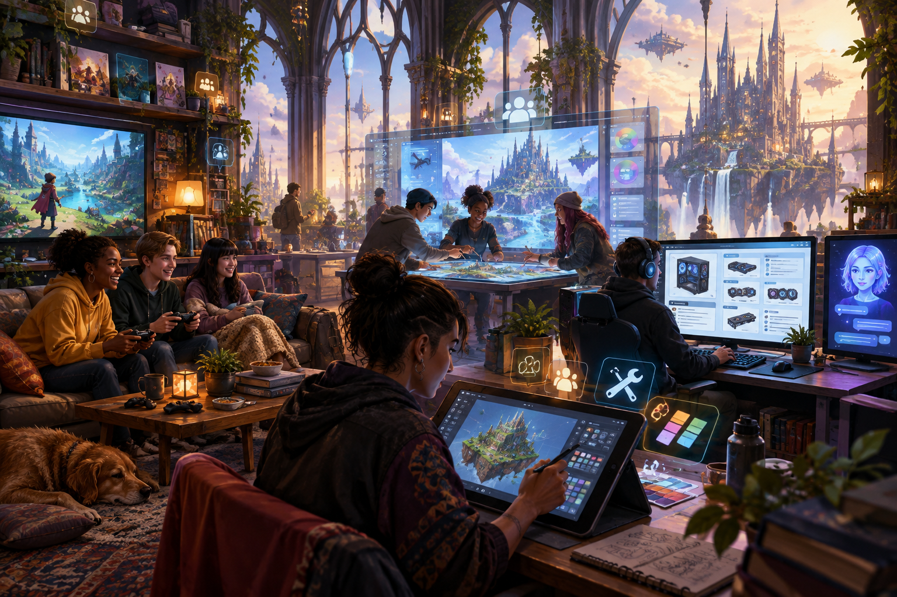
Pixels, Personas, and Participation: The Forces Shaping Gaming Culture in 2026
In 2026, gaming culture thrives on innovation, accessibility, community, and the transformative influence of artificial intelligence. Here’s how these trends—and the people behind them—are redefining what it means to play, create, and connect.
READ THE STORY ↗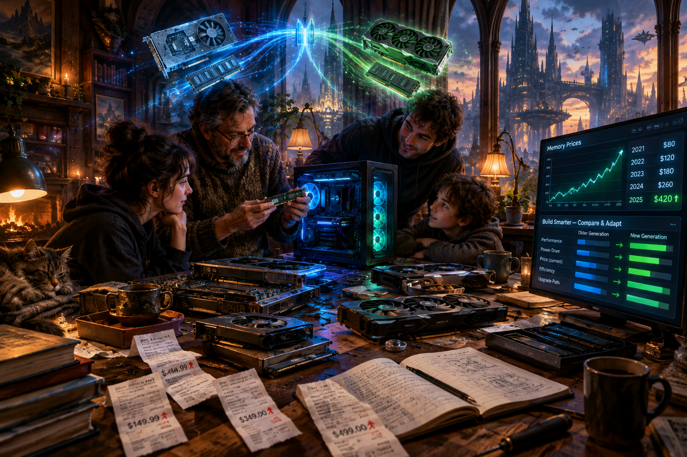
Building Smarter, Not Just Faster: PC Gaming’s Great Adaptation in a Turbulent 2026
With PC gaming hardware facing its toughest crossroads in years, enthusiasts are rewriting the rules of upgrading, budgeting, and staying at the cutting edge. Here’s how 2026’s smartest builders are navigating memory shortages, AI-fueled disruption, and the hunt for true value in a marketplace that refuses to stand still.
READ THE STORY ↗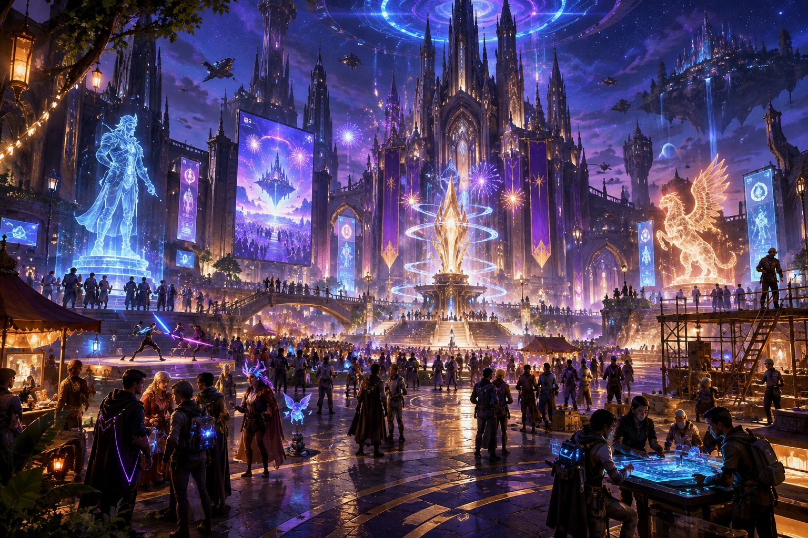
Forging Tomorrow's Legends: How Evolving MMORPGs in 2026 Balance Tradition, Community, and Change
As the great virtual worlds of 2026 thrive, MMORPGs are forging a path that blends innovative systems with classic values—proving that the genre's future lies in meaningful communities, transparent practices, and player-driven evolution.
READ THE STORY ↗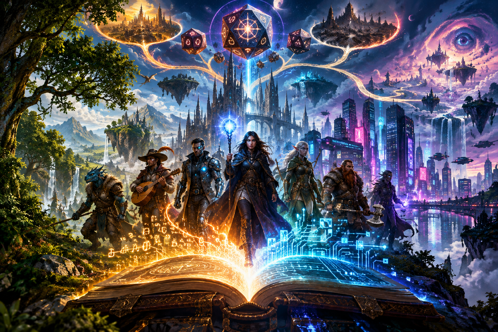
Evolution at a Crossroads: The State of RPGs in 2026 and the Stories We Still Long to Tell
Despite economic headwinds and changing player habits, 2026’s role-playing games—big and small—are pushing creative boundaries. What are the forces shaping RPGs today, and why do players still return to these living worlds?
READ THE STORY ↗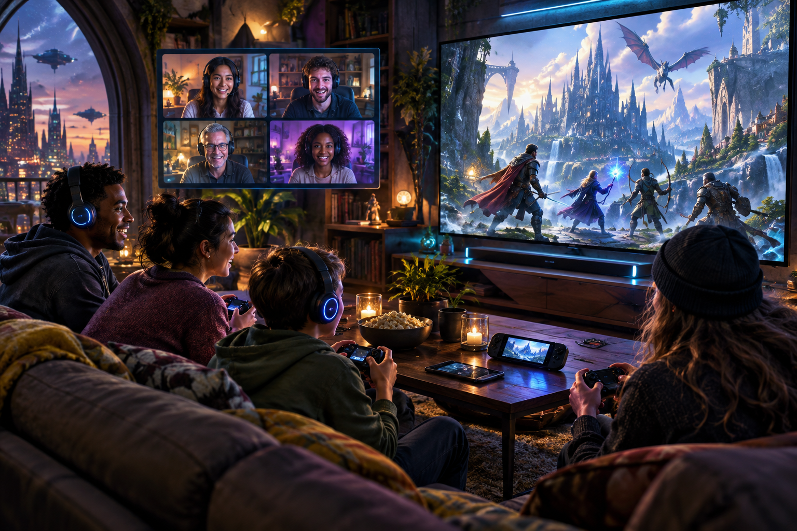
Console Co-Op in 2026: Why Collaborative Play Defines the New Era of Home Gaming
From surging hardware sales to blockbuster co-op success stories, consoles are embracing their roots—by prioritizing connection, creativity, and togetherness.
READ THE STORY ↗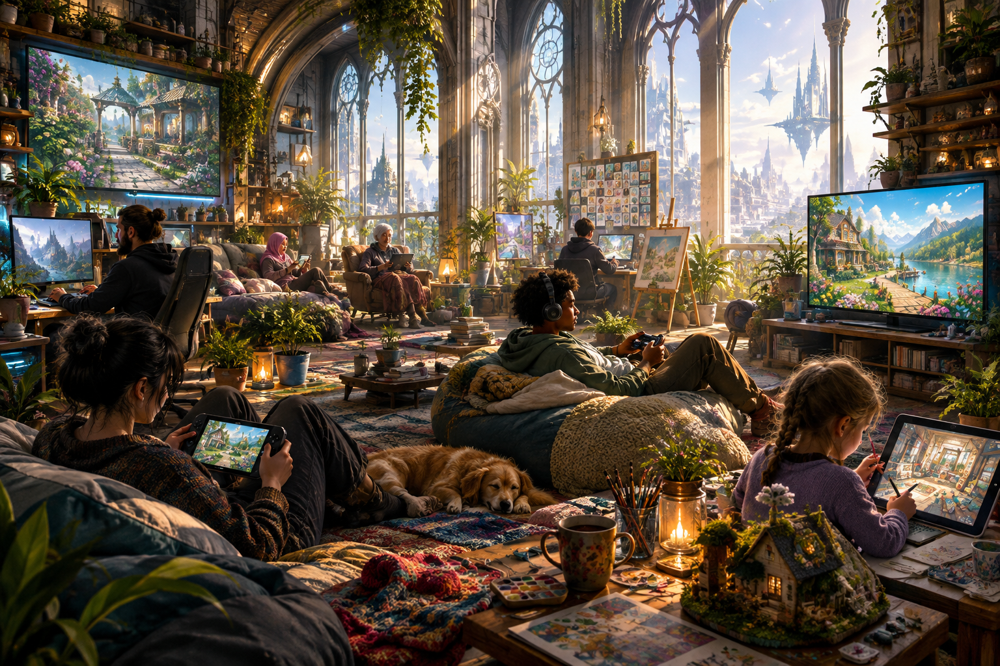
The Cozy Gaming Gold Rush: How Comfort, Community, and Creativity Define Gaming Culture in 2026
Once a quiet niche, cozy gaming has gone mainstream in 2026, transforming how and why millions play. The boom speaks to deeper cultural shifts toward well-being, player creativity, and meaningful online connection—all reshaping the definition of gaming culture.
READ THE STORY ↗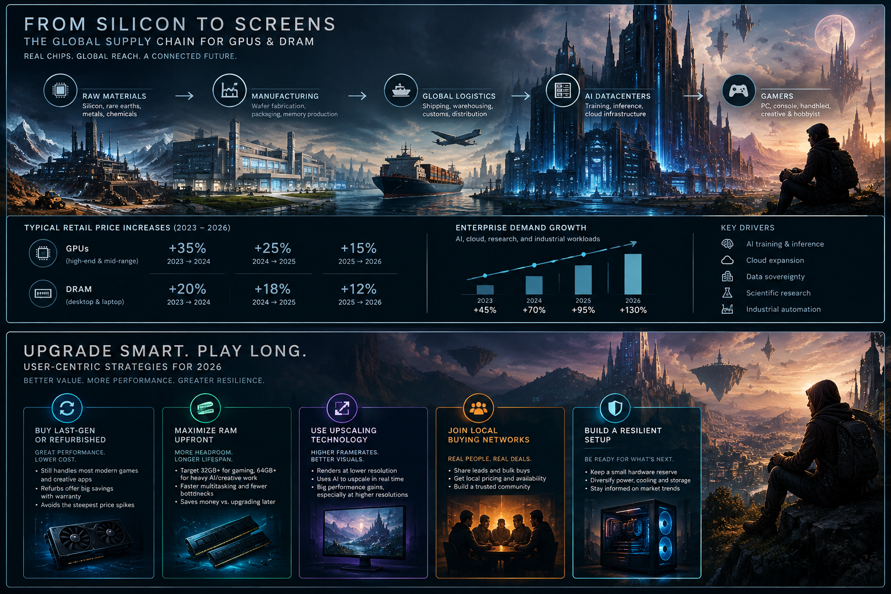
Navigating the AI Boom: Strategies for PC Gamers Amidst 2026's Hardware Shortages
AI has become the dominant force shaping the PC hardware market, ushering in soaring prices and unprecedented scarcity. Here’s how gamers can adapt, strategize, and continue playing despite the silicon squeeze.
READ THE STORY ↗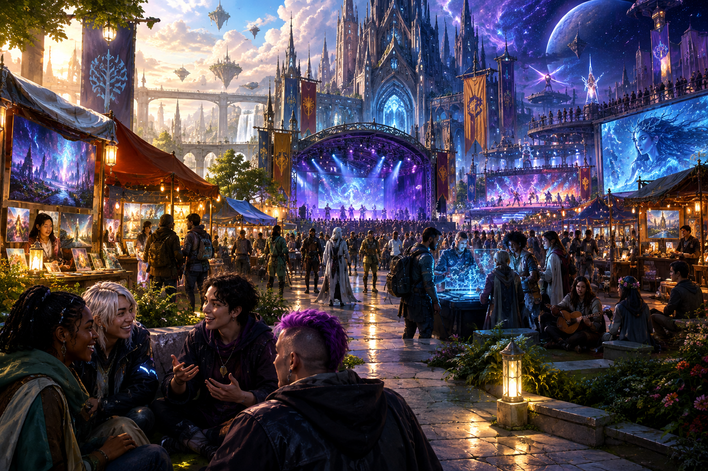
The Social Sandbox: How MMORPGs in 2026 Are Forging New Boundaries for Digital Community
MMORPGs in 2026 are redefining what it means to belong and play together online, as player-driven events, evolving monetization, and enduring design form the new blueprints of digital societies.
READ THE STORY ↗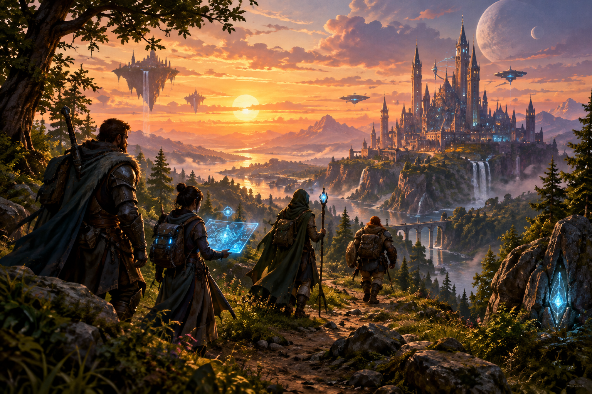
Legacy and Innovation: How 2026’s RPGs Bridge Past and Future
In 2026, role-playing games are thriving by honoring iconic legacies and redefining player experience, from record-breaking genre moments to the lasting impact of legendary studios.
READ THE STORY ↗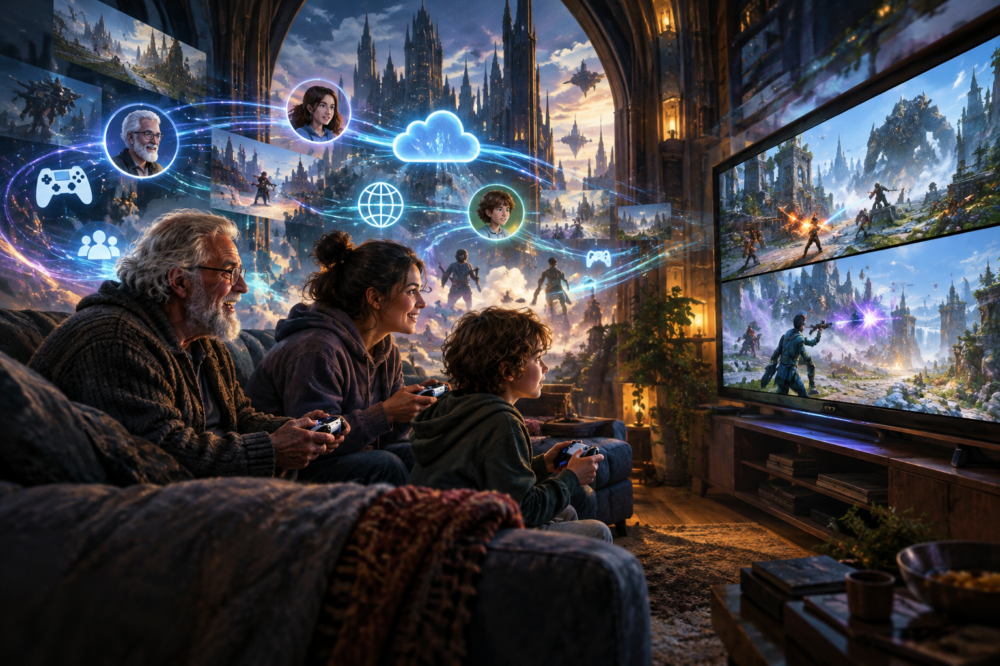
Reunited at the Console: The Enduring Appeal—and Innovation—of Co-Op Gaming in 2026
Amid technological leaps, live-service trends, and the expanding digital landscape, co-op play carves out a thriving space on today’s consoles, blending innovation with nostalgia.
READ THE STORY ↗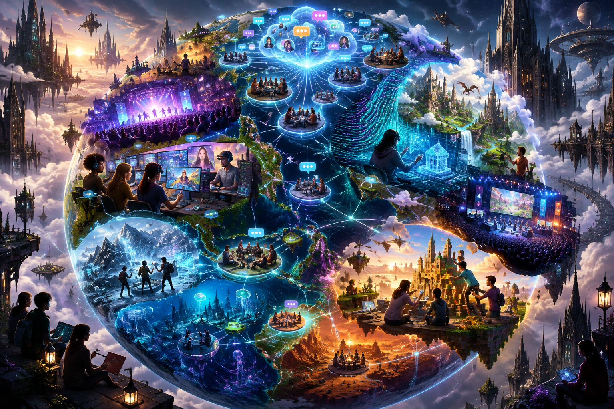
Redefining Play: How AI and Community Shape Gaming Culture in 2026
Gaming culture in 2026 transcends entertainment. Fueled by AI-powered personalization and community creativity, games are evolving into spaces for identity, expression, and digital connection. Explore the cultural shift that’s making gaming more human—even as machines power the change.
READ THE STORY ↗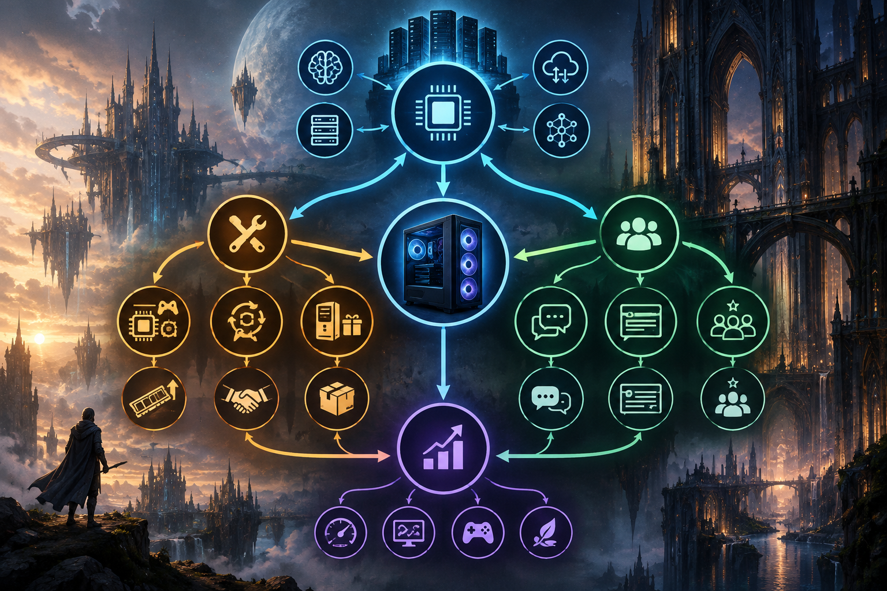
When the Upgrade Pauses: How the Silicon Supply Crunch Is Changing the PC Gamer Experience in 2026
The global memory shortage and AI-driven market shake-ups are suspending the classic hardware arms race. Explore how gamers, communities, and developers are adapting strategies and expectations in a year defined by scarcity and resilience.
READ THE STORY ↗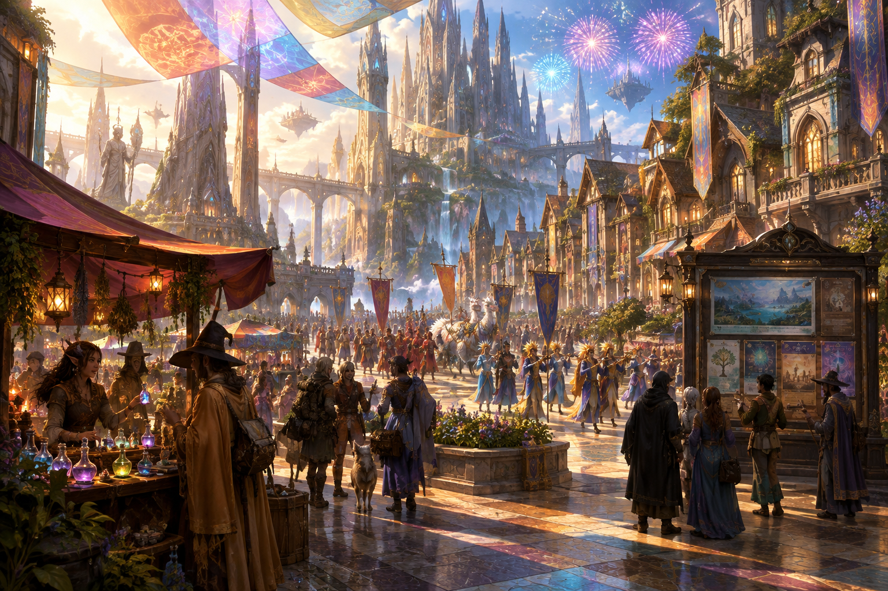
Winning Back Wonder: How MMORPGs in 2026 Reignite Discovery, Diversity, and Player Agency
2026 marks a new era for MMORPGs, where surprise and self-expression replace grind and repetition, and worlds offer boundless avenues for engagement. Here’s how a maturing genre is rekindling curiosity and redefining what it means to play—and belong—in a virtual world.
READ THE STORY ↗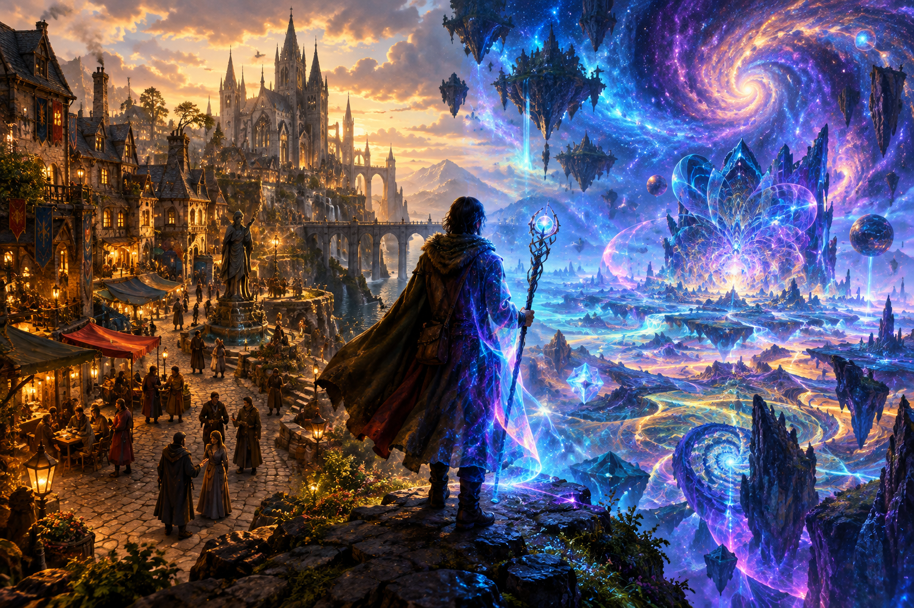
From Legacy to Quantum Leap: RPGs in 2026 and the Reinvention of Imagination
Legends never die—great RPG studios laid the foundation, but 2026's most transformative titles blend revered narrative traditions with emerging technologies like quantum computing, shaping the next chapter in the art of the role-playing game.
READ THE STORY ↗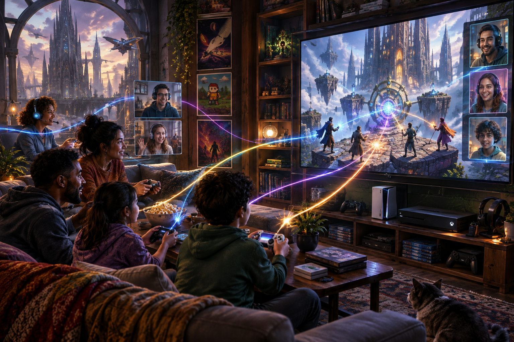
United in Play: How Co-Op Redefined Console Gaming in 2026
A deep look at the renaissance of co-op gaming on consoles—the trends powering its return, the genre’s best new ideas, and what’s next for everyone who loves to play together.
READ THE STORY ↗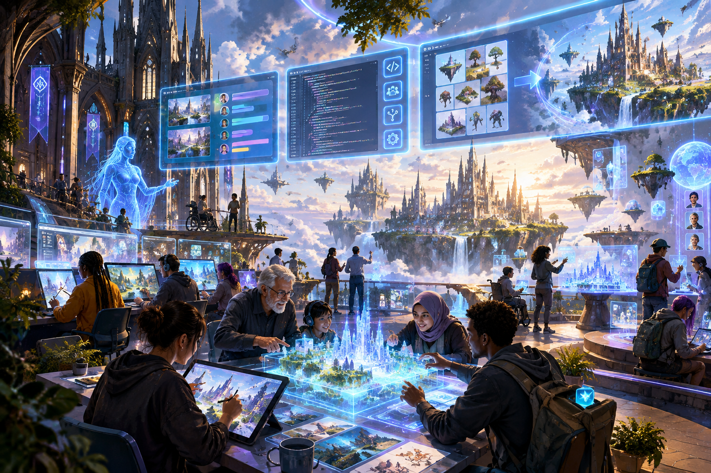
Creative Engines Unleashed: How AI and Direct Play Are Transforming the Culture of Gaming in 2026
In 2026, gamers are not just playing—they’re world-building, collaborating, and shaping the industry through direct feedback and AI-powered creativity. Explore how innovation and participation are redefining gaming’s cultural landscape.
READ THE STORY ↗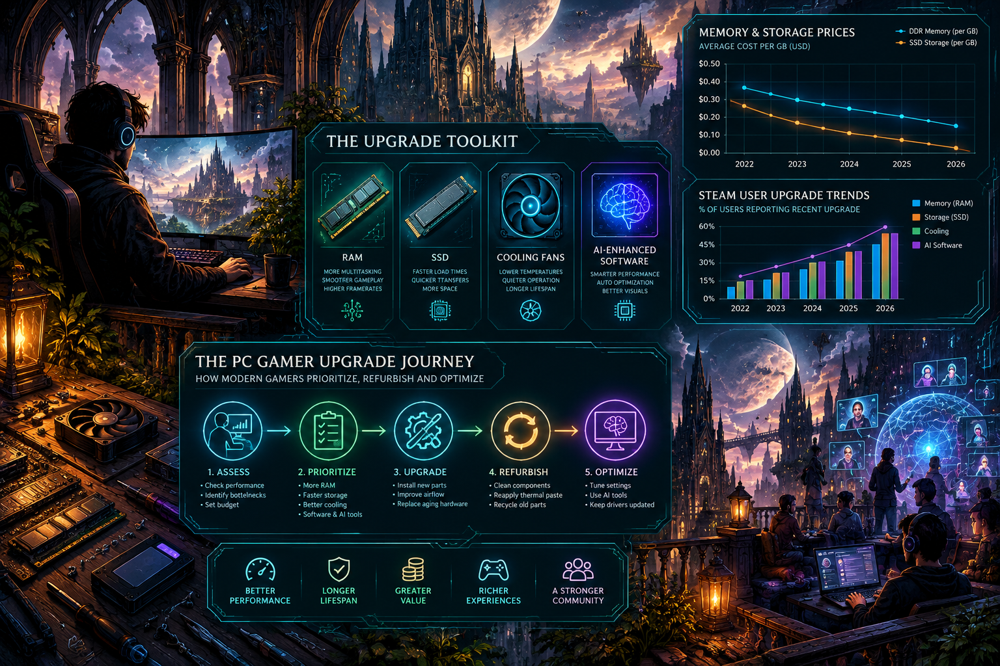
Smart Spending, Lasting Gear: How Savvy Upgrades and New Strategies Are Keeping PC Gaming Alive in 2026
In a year of memory scarcity and sky-high hardware prices, PC gamers are rewriting the rules of upgrading and adaptation, embracing smarter builds, efficient tech, and creative solutions to play strong in the new era.
READ THE STORY ↗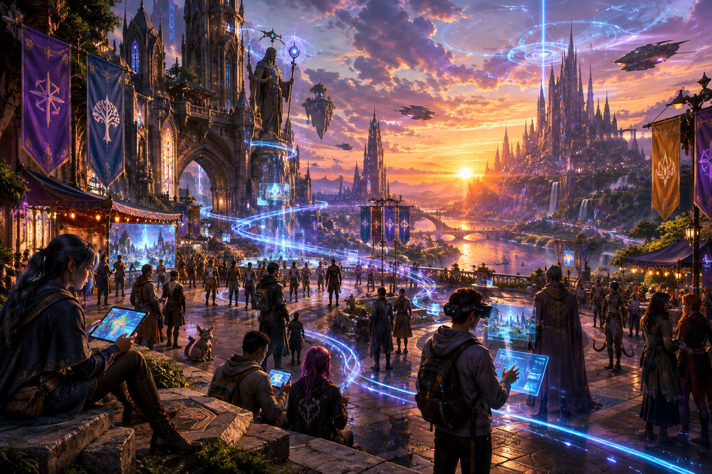
Enduring Worlds: The Lasting Power and New Horizons of MMORPGs in 2026
As the gaming landscape evolves, MMORPGs stand resilient—reshaping the social fabric of online play with bold innovations and familiar community bonds.
READ THE STORY ↗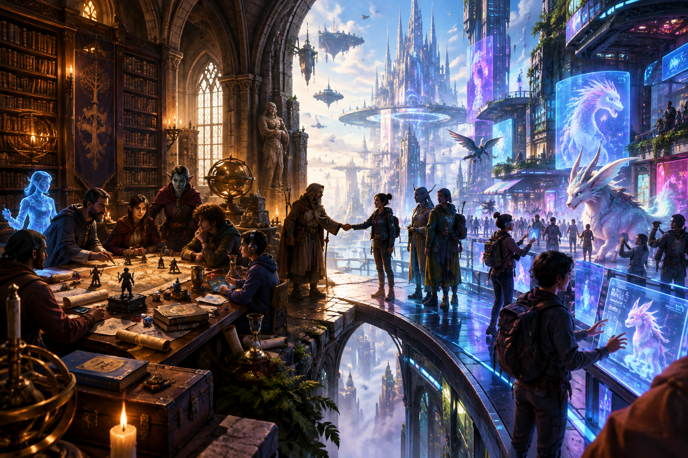
Divergent Paths: How New Narratives and Old Pillars Are Splitting RPG Evolution in 2026
The RPG genre of 2026 stands at a crossroads—developers marry legacy systems with bold creativity, bringing players divergent experiences that both honor the old and beckon the new. Where do tradition and transformation intersect, and where are they at odds?
READ THE STORY ↗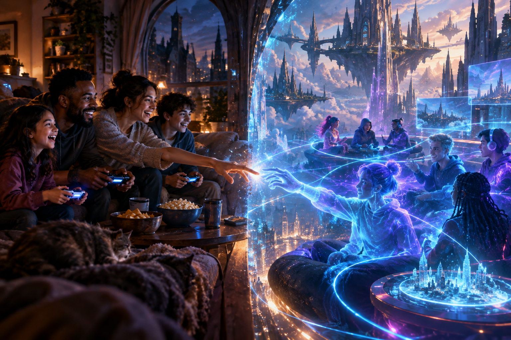
United We Play: How Console Co-Op Transformed the Gaming Experience in 2026
As console co-op gaming surges in popularity, we explore the cultural and technological forces igniting a golden age of shared play — and why studios and players alike are embracing new ways to connect both locally and online.
READ THE STORY ↗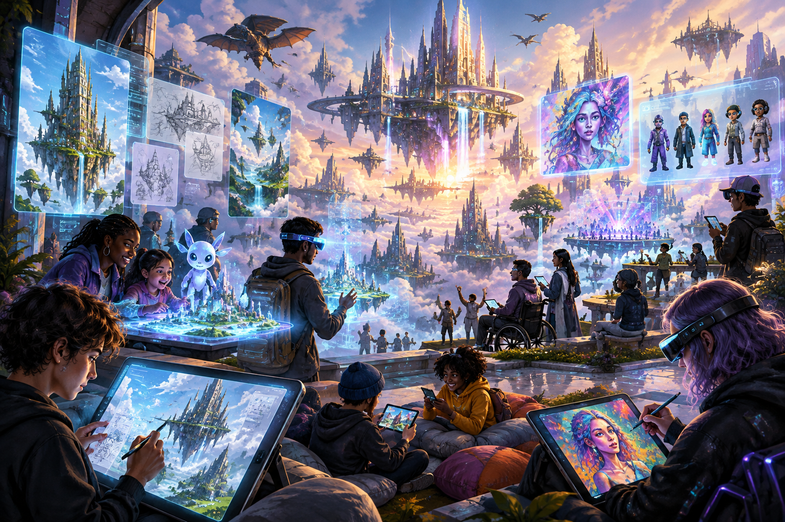
Beyond Achievement: How 2026’s Gaming Culture is Rewriting the Rules of Play and Participation
Gaming culture in 2026 transcends the screen, igniting new forms of creativity, community, and personal storytelling thanks to AI-powered experiences, cloud ecosystems, and a renaissance of player-driven worlds.
READ THE STORY ↗Ctrl, Alt, Innovate: How Gamers and Engineers Are Rethinking the PC in 2026
As hardware shortages challenge PC gaming’s status quo, 2026 has become a crucible for innovation. From AI-powered upscaling to community-driven tweaks and unexpected upgrade strategies, discover how a new breed of PC gamer is thriving—and how industry leaders are rewriting the rules of performance.
READ THE STORY ↗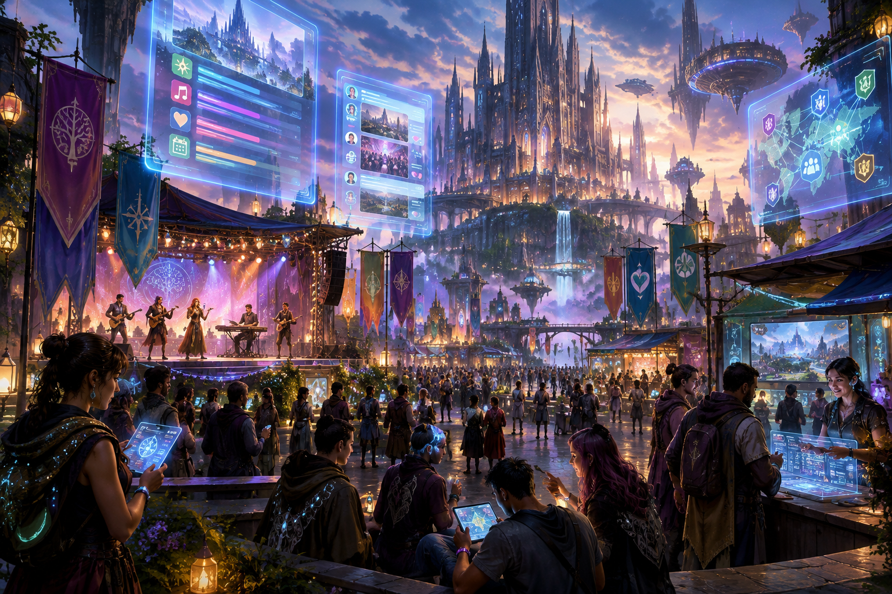
Worlds Without Borders: MMORPGs and the Power of Ongoing Community in 2026
Modern MMORPGs have refined their real magic: a living, evolving world shaped by endless player interaction, creativity, and perpetual events. Here’s how 2026’s MMOs are mastering the art of community.
READ THE STORY ↗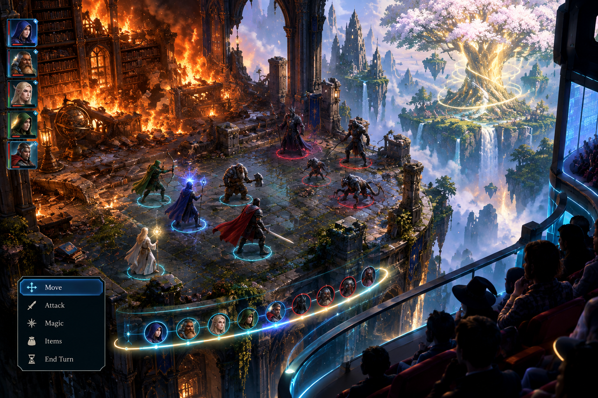
The Turn-Based Revival: Why Strategic RPGs Are Reshaping the Genre in 2026
Turn-based RPGs are experiencing a creative and commercial renaissance. We dive into the design philosophies and cultural trends powering this resurgence, exploring why slow, tactical gameplay is captivating a new generation of players in the age of instant gratification.
READ THE STORY ↗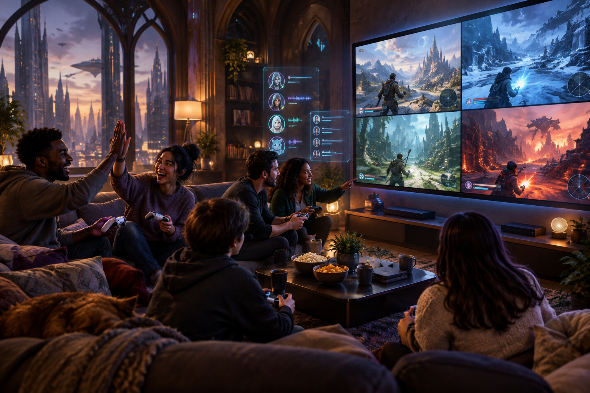
Enduring Together: How Console Co-Op is Shaping the Future of Shared Play in 2026
With console gaming reaching new audiences and cooperative experiences thriving, we explore how couch co-op, digital ecosystems, and genre innovation are reinventing what it means to play together.
READ THE STORY ↗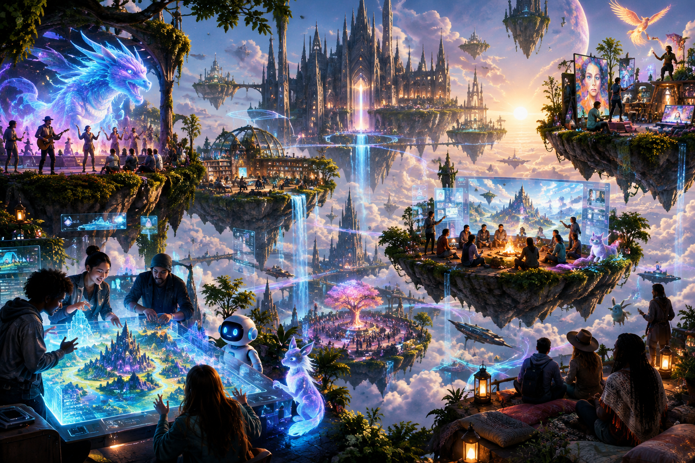
Pixels & Possibilities: How AI-Driven Storyworlds and Creative Communities Are Redefining Gaming Culture in 2026
In 2026, gaming culture is being transformed by the rise of AI-generated storytelling, creator-led ecosystems, and interconnected play. This is the story of how generative technology and global communities are pushing games beyond play, into participatory worlds and personal narratives.
READ THE STORY ↗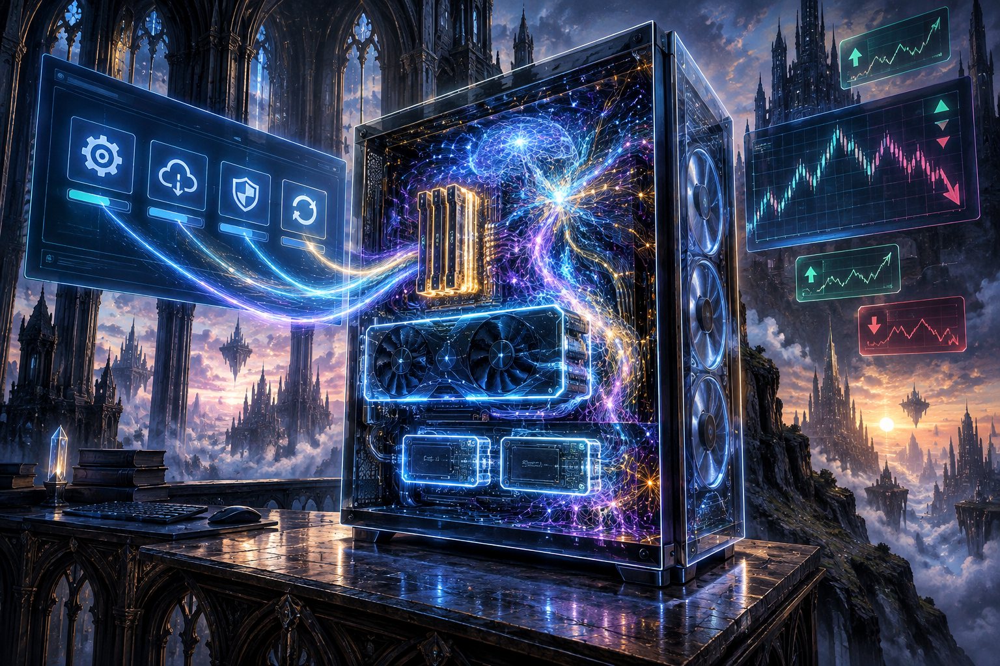
AI at the Helm: Navigating the New Realities of PC Gaming Hardware in 2026
AI-driven innovations, shifting market forces, and component shortages are redefining what it means to build, upgrade, and play on PC in 2026. Here’s how neural rendering, DLSS 4.5, and a volatile supply chain are shaping strategy—and what every enthusiast needs to know about thriving in a transformed tech landscape.
READ THE STORY ↗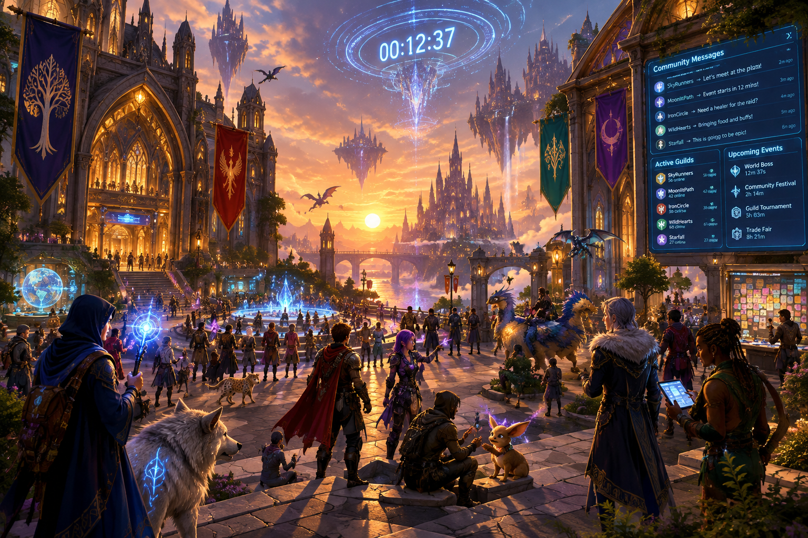
Worlds Without End: How MMORPGs are Mastering Live Worlds, Player Events, and Perpetual Community in 2026
From world-changing events to innovative community systems, MMORPGs in 2026 thrive by making every login matter, every choice ripple, and every player part of the shared story.
READ THE STORY ↗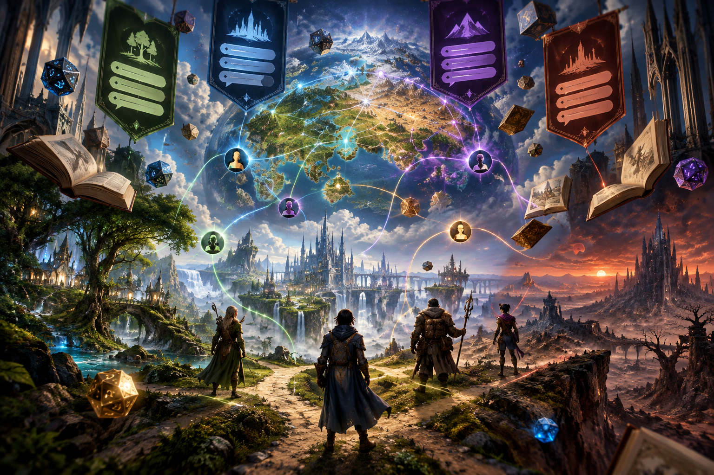
Epic Legacies and New Frontiers: The Evolving Artistry of RPGs in 2026
Role-playing games in 2026 are building on decades of genre-defining innovation. Discover how modern releases like Final Fantasy Resonance and the enduring influence of classics like Baldur’s Gate II continue to shape the landscape, and why RPGs remain the industry’s gold standard for interactive storytelling.
READ THE STORY ↗
Together at the Console: The 2026 Co-Op Surge and the Evolution of Shared Play
The world of console gaming in 2026 is undergoing a vibrant transformation, as new technologies, design philosophies, and player demands fuel a renaissance in cooperative play. Across living rooms and continents, gamers are coming together like never before.
READ THE STORY ↗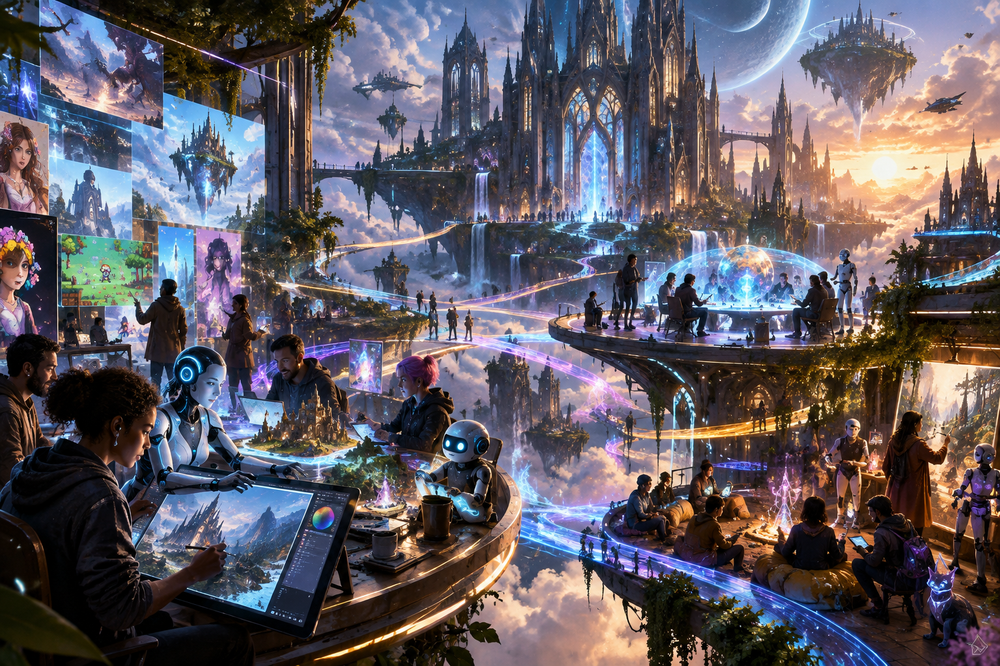
Beyond the Screen: How Gaming Culture in 2026 is Blending AI, Player Expression, and Immersive Worlds
Gaming in 2026 is a crucible of creativity, technology, and human connection—where generative AI, interactive storyworlds, and a surge in player agency redefine what it means to play, create, and belong.
READ THE STORY ↗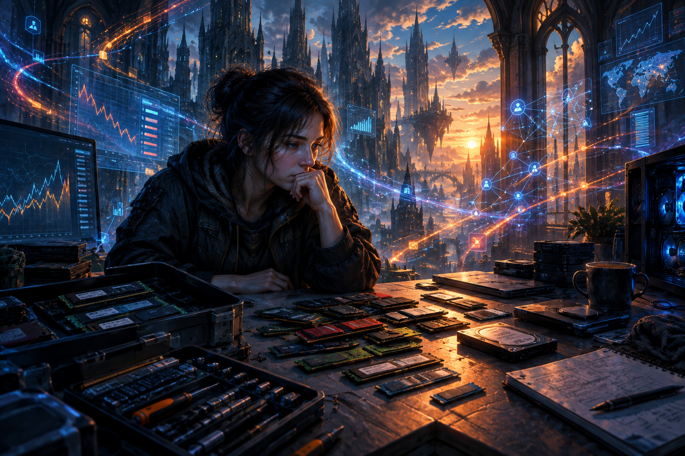
Building Smarter: New Strategies and Pitfalls for PC Gamers in the 2026 Hardware Squeeze
With AI demand causing memory shortages and price spikes, 2026’s PC gamers face a harsher market. Here’s how upgrade decisions, community wisdom, and new tech trends are reshaping the way we build and buy gaming PCs today.
READ THE STORY ↗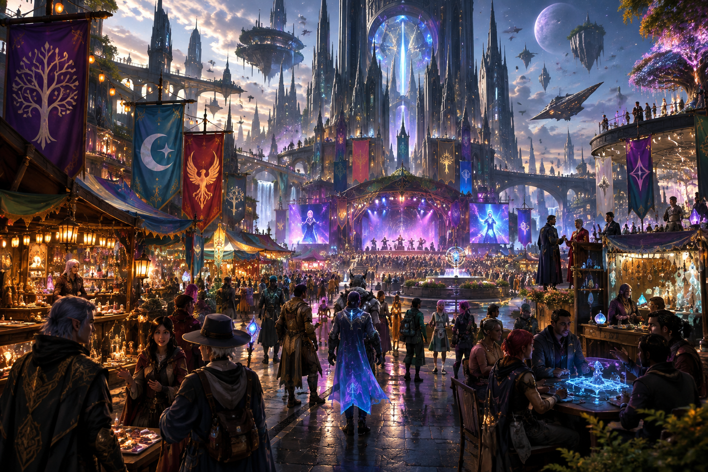
Beyond Loot and Levels: How Social Innovation Is Reshaping MMORPGs in 2026
In 2026, MMORPGs aren’t just about slaying dragons or finding the rarest gear—they’re playgrounds for social invention, where new systems and community-driven features are forging the next frontier of digital connection.
READ THE STORY ↗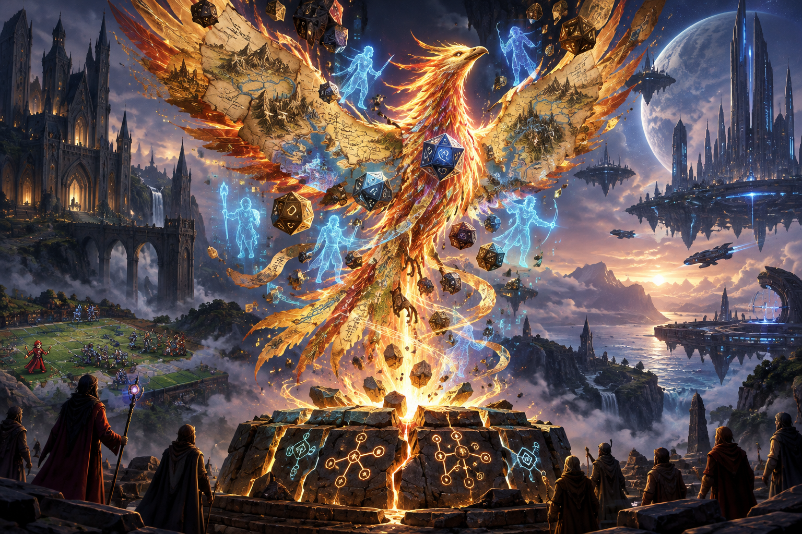
The RPG Reawakening: How Classics and Closures Shape 2026’s Role-Playing Renaissance
From the fallout of iconic studio closures to the resurgence of classic gameplay traditions, the RPG genre in 2026 is defined by innovation, nostalgia, and the determination of its creative communities.
READ THE STORY ↗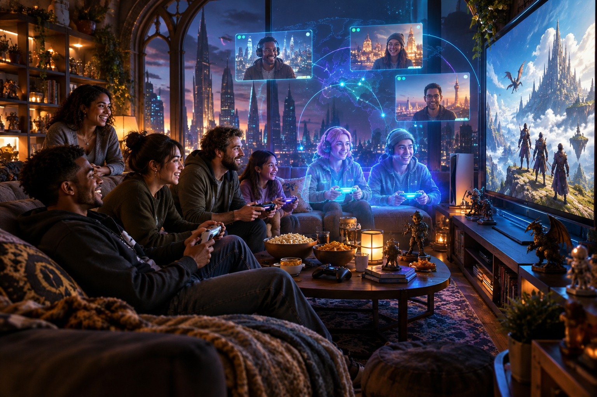
Console Co-Op in 2026: The Social Renaissance of Shared Play
In an era defined by rapid innovation and a revived passion for togetherness, console co-op games are leading a new golden age of social gaming. This feature explores the numbers, the evolving experiences, and the human connections at the heart of today’s console and co-op scene.
READ THE STORY ↗
Choice at Play: How Player Agency and Game Design Empower Personal Expression in 2026
No longer simple diversions, games in 2026 are powerful engines of self-expression and storytelling, where meaningful choices empower players and developers alike, redefining identity, creativity, and connection in the digital age.
READ THE STORY ↗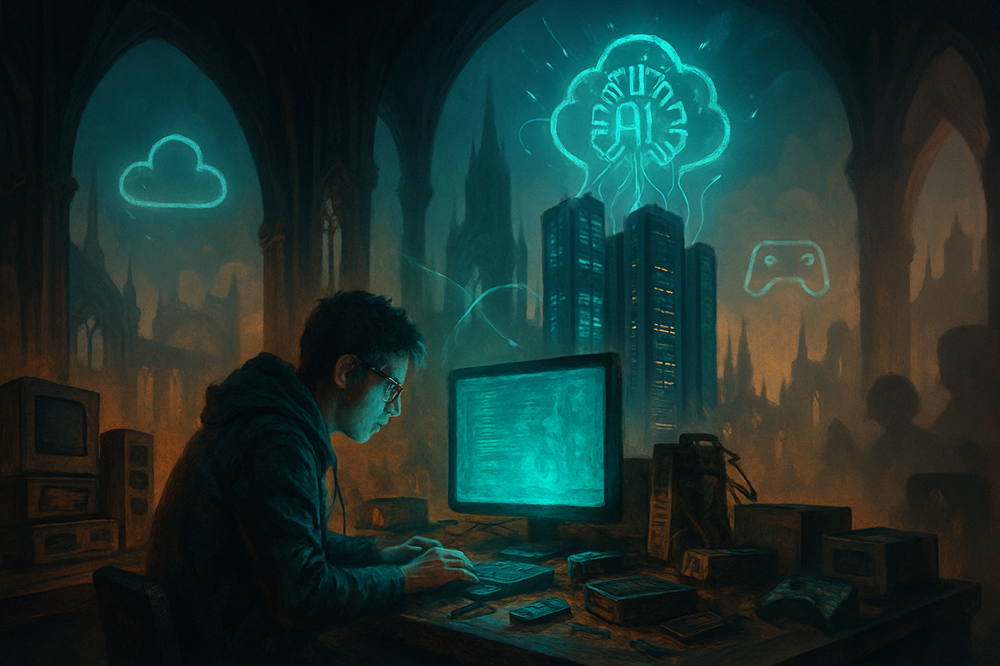
The AI Effect: Navigating the New Realities of PC Gaming Hardware in 2026
As demand for artificial intelligence continues to consume the world's supply of GPUs and memory, PC gamers face soaring hardware prices and a rapidly changing landscape. Here's how gamers, manufacturers, and game developers are adapting—and what the future might hold for PC gaming performance, value, and accessibility.
READ THE STORY ↗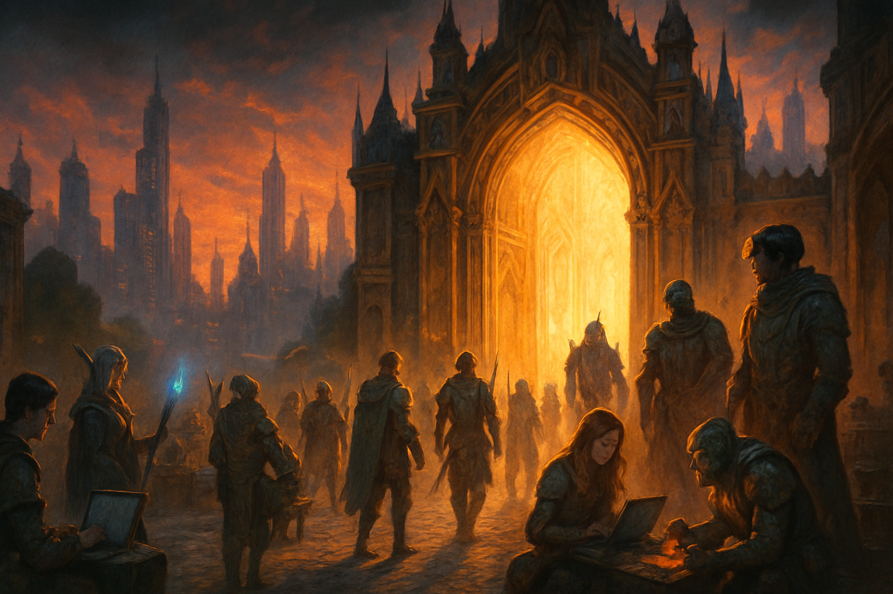
Living Worlds, Lasting Bonds: Why MMORPGs Remain the Beating Heart of Online Gaming in 2026
Innovation, growth, and community: How MMORPGs are flourishing in 2026, and why new technology and deeper social experiences are redefining the genre’s future.
READ THE STORY ↗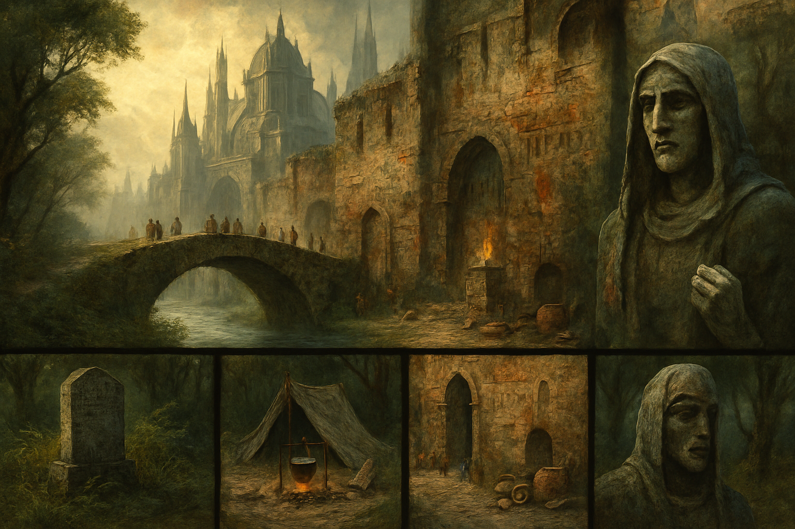
Mapmakers and Worldshapers: Why Environmental Storytelling Defines the Next Era of RPGs
In 2026, RPGs are not just expanding in size—they’re transforming in depth. Here’s how environmental storytelling has become the power tool for delivering stunning, unforgettable worlds.
READ THE STORY ↗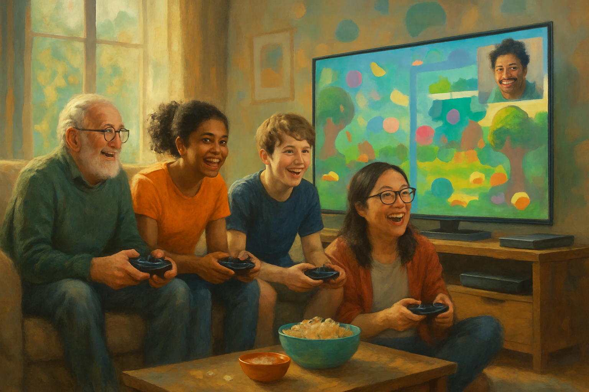
From Couch to Cloud: How Co-Op Brought Console Gaming Into Its Social Renaissance
2026 marks the next golden era for console co-op. Modern technology, classic values, and a changing player culture have aligned to make shared-play the defining experience of the year.
READ THE STORY ↗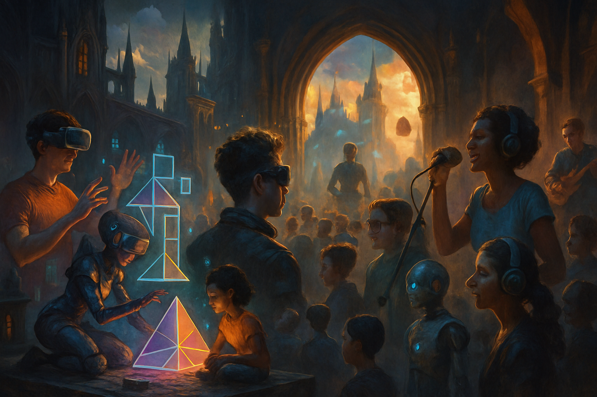
Infinite Worlds, Infinite Players: How Gaming Culture Redefines Community, Creativity, and Identity in 2026
The lines between creator, competitor, and audience have blurred. In 2026, gaming culture thrives on creativity, inclusiveness, and the seamless fusion of technology and human imagination. Here’s how this dynamic ecosystem is shaping the new frontier of global culture.
READ THE STORY ↗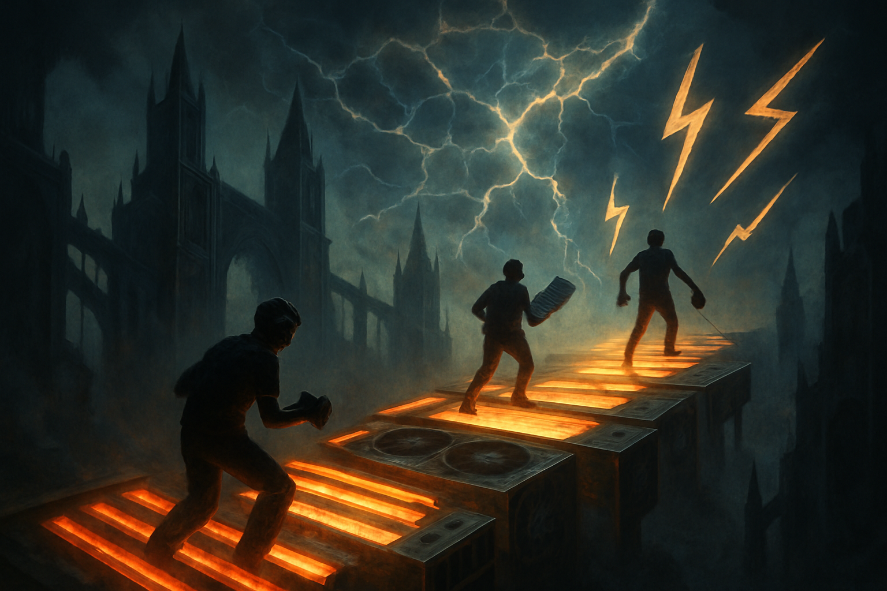
Through the Silicon Gauntlet: PC Gaming Hardware’s Reckoning in the Age of AI, Memory Shortages, and Next-Gen Innovation
PC gaming faces a pivotal crossroads in 2026, as AI demand, soaring memory prices, and hardware innovation clash to redefine the gaming landscape and the path to upgrade.
READ THE STORY ↗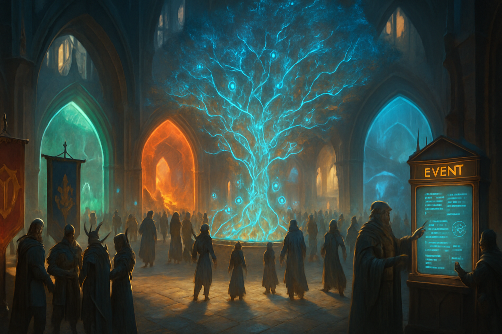
Evolving Quests: How MMORPGs in 2026 Are Reforging the Social Frontier
With player-driven experiences, enduring classics, and emerging innovations, MMORPGs in 2026 are revitalizing virtual worlds to place real connections and meaningful play back at the heart of online adventure.
READ THE STORY ↗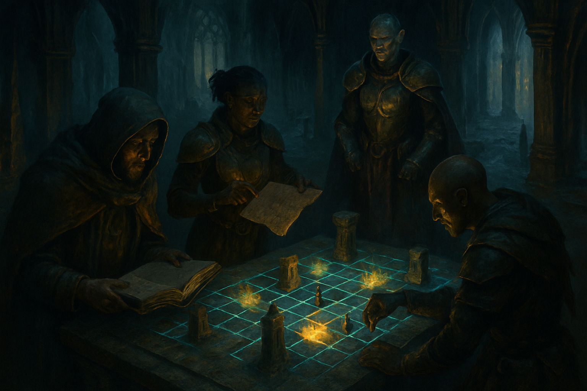
The Quiet Revolution: How Turn-Based Combat is Powering the Next Renaissance in RPGs
In 2026, turn-based RPGs are no longer relics—they’re flagbearers of a genre in creative overdrive. Developers big and small are reinventing classic systems, ushering in a new era for strategy, storytelling, and accessibility.
READ THE STORY ↗
Co-Op Revolution: Why Shared Play Defines Console Gaming in 2026
Reviving the spirit of togetherness, console and co-op gaming have surged to new heights in 2026—blending blockbuster hardware, market expansion, and an industry-wide embrace of social gaming.
READ THE STORY ↗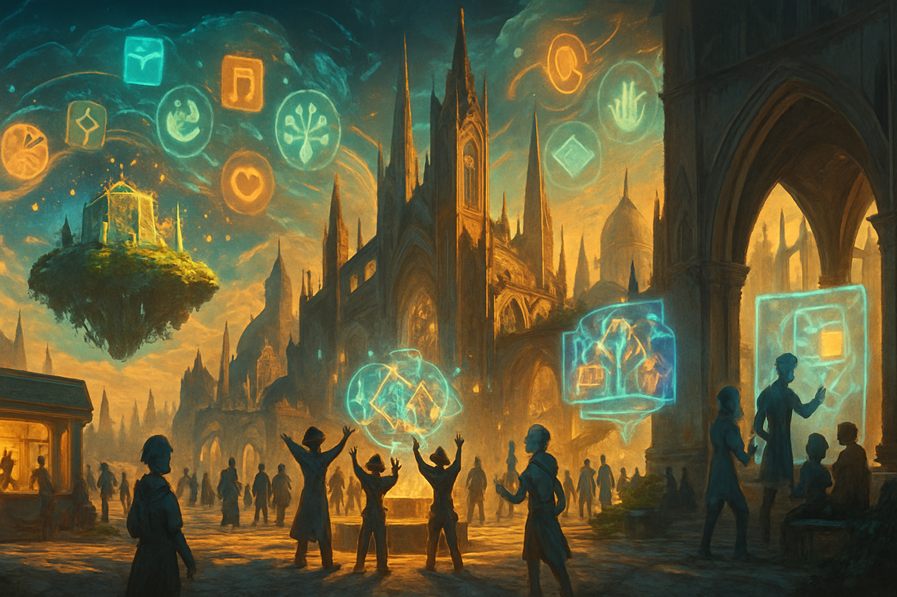
Pixels, Platforms, and Participation: The Real Power of Gaming Communities in 2026
As the world’s largest entertainment medium, gaming in 2026 is no longer about escapism—it’s about genuine connection, creative power, and cultural relevance. Today’s games are vast social platforms reshaping how we meet, collaborate, create, and even stand up for what matters.
READ THE STORY ↗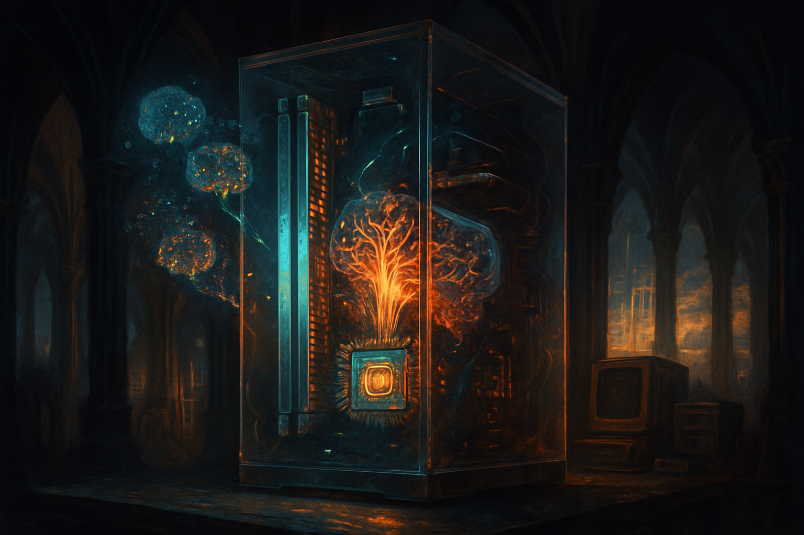
Battle for the Silicon Throne: How AI, Memory Shortages, and SoC Innovation Are Shaping the PC Gaming Hardware Scene in 2026
With memory prices soaring and AI-integrated chips creating new opportunities and hurdles, PC gaming hardware in 2026 is defined by both scarcity and ingenuity. Here’s how enthusiasts are adapting and the tech giants are betting on a new future for desktop gaming.
READ THE STORY ↗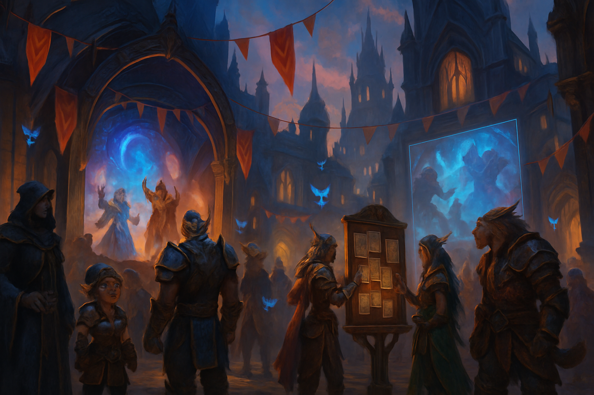
Connected Worlds: Why MMORPGs Thrive in 2026’s Changing Gaming Landscape
In a year marked by industry shifts and technology leaps, the MMORPG remains uniquely enduring. Here’s how 2026’s best online worlds keep players returning—and why social play, classic design, and evolving events are at the heart of their continued success.
READ THE STORY ↗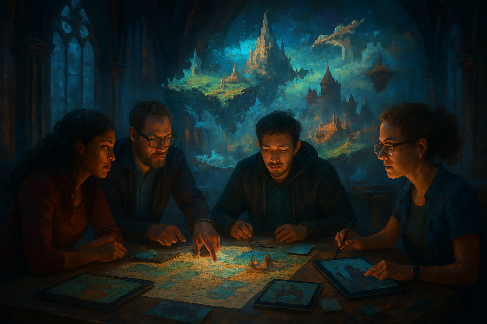
Small Studios, Big Worlds: How Indie Developers Are Reshaping RPGs in 2026
Once dominated by blockbuster developers, the RPG landscape of 2026 is now animated by the creative force of small, independent studios. With innovative design, live development tools, and player-focused dynamics, these teams are challenging conventions—and making some of the year’s most memorable experiences.
READ THE STORY ↗
Console & Co-Op in 2026: The New Golden Age of Shared Play
Far from fading into the background, cooperative gaming has surged to the top of the console world. In 2026, both the numbers and the experiences confirm that co-op is not just nostalgia—it’s the new innovation and the core of the modern console experience.
READ THE STORY ↗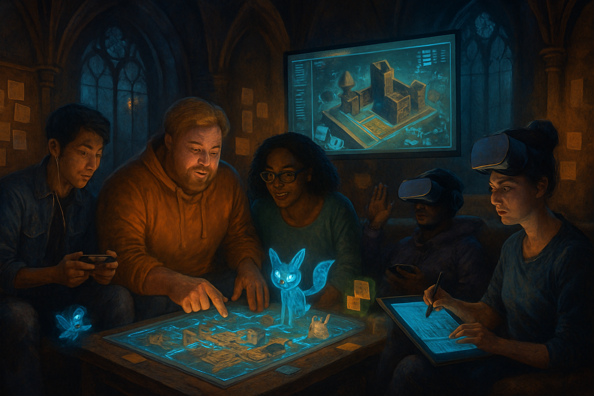
Leveling Up: How Gaming Culture in 2026 Stretches Beyond the Screen
In 2026, gaming culture stands at the intersection of community, creativity, and technology. As the boundaries blur between players and creators—and between virtual and real worlds—gaming is redefining what it means to connect, collaborate, and play.
READ THE STORY ↗The New Era of Performance: How 2026’s PC Hardware Is Empowering Gamers and Redefining the Upgrade Path
From neural rendering breakthroughs to innovative desktop and display designs, 2026 sets a new standard for what’s possible—and practical—in PC gaming hardware.
READ THE STORY ↗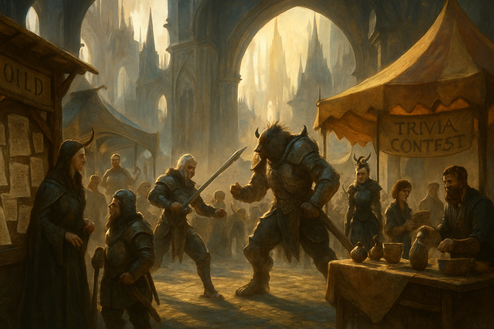
Living Worlds, Real Connections: Why MMORPGs Remain the Heartbeat of Online Gaming in 2026
After decades of evolution, MMORPGs remain vibrant global communities. We examine how player-driven innovation, new monetization strategies, and the genre’s unique social fabric continue to shape interactive entertainment on a massive scale.
READ THE STORY ↗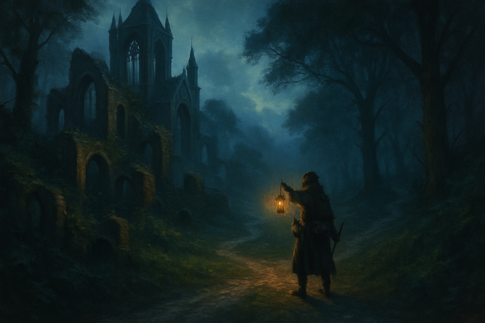
Hidden Depths, Open Worlds: The Unsung Art of RPG Exploration
In the era of hyper-guided experiences, why do secrets still matter in role-playing games? A feature on the evolving landscape of RPG design, guided by industry expertise, timely releases, and the tension between player discovery and design transparency in 2026.
READ THE STORY ↗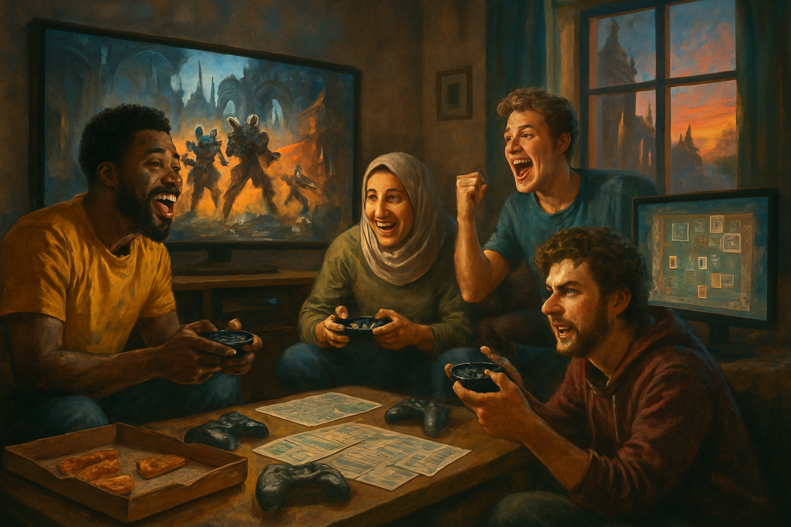
The 2026 Co-Op Comeback: How Console Gaming Relearned the Power of Playing Together
In 2026, console and co-op gaming are surging on the strength of deeper player connections and a new wave of design. This feature examines the reasons behind the renaissance, explores the ecosystem shifts empowering developers, and profiles the titles and trends showing why playing together—at home or online—matters more than ever.
READ THE STORY ↗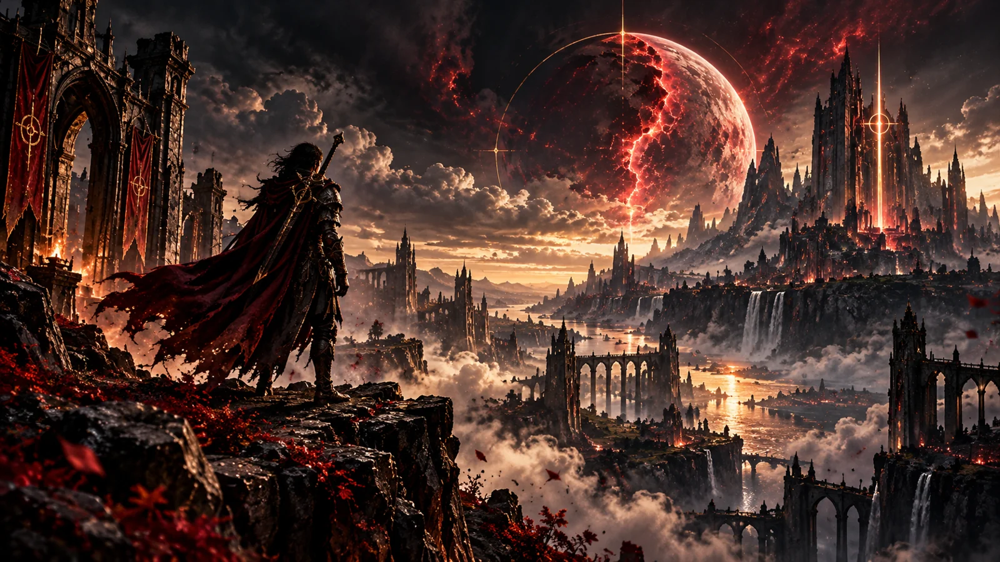
What Makes a Game Worth Your Time?
A better way to judge a game than counting features, trailers, or hours alone.
READ THE STORY ↗
A Smarter Way to Plan Your Next PC Upgrade
Frame-rate numbers matter—but only after you understand the bottleneck.
READ THE STORY ↗
Why the Best MMO Moments Still Happen With Other People
A dungeon run can become a story nobody planned.
READ THE STORY ↗The Art of a Meaningful Choice in Role-Playing Games
Real agency is not always about choosing between good and evil.
READ THE STORY ↗The Case for Playing Together on One Couch
Why a good two-player experience can beat another endless online queue.
READ THE STORY ↗